Qt 窗口
Qt 窗口第一个窗口其它方式-生成按钮在 main.c 中创建 PushButton在 MainWindow 中创建 PushButton其他方式-使按钮发挥作用在设计界面使用信号槽编辑工具在新建对象后建立连接简单示例-1第二个窗口_多窗口-1其它方式-建立信号连接简单示例-2第二个窗口_多窗口-2窗口-菜单栏其它方式-添加菜单添加动作到菜单子目录添加动作到菜单简单示例窗口-状态栏-动态提示状态栏-添加控件状态栏-提示-2总结参考资料
第一个窗口

打开Qt Creater后，菜单栏在最上方， 左侧上方最常用的选项是编辑、设计和 Debug， 编辑用于编辑代码，设计用于设计界面，左侧下方分别是选择编译环境、运行、调试、构建。
欢迎主界面：这个界面可以打开或者新建工程，当然也可以在菜单栏上打开，然后还有示例工程和视频教程；
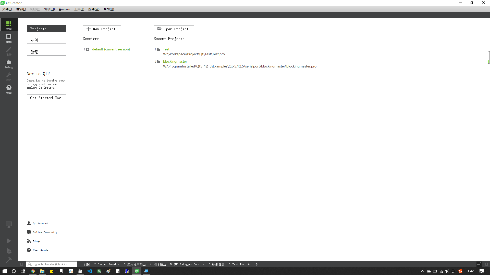
编辑主界面：这个界面用于编辑代码、文件管理；
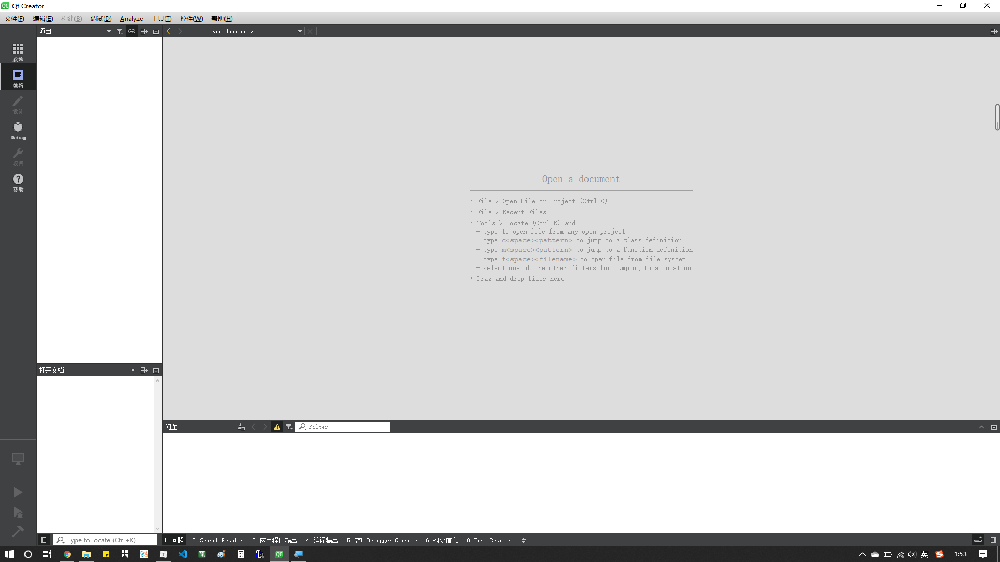
下面新建一个工程：一般来说，需要 GUI 就选择 Widgets，否则就 Console，剩下几个是 python 以及 QML 编写的 GUI，按需选择，这里选择第一个。

设置工程名与路径；

选择用什么编译，一般是qmake或者cmake；

这里主要有三种类，QMainWindow 一般用作应用的主窗口，可以有工具栏状态栏等，QDialog 适合做弹出窗口或者简单的界面，QWidget 适合做自定义的部件也可以成为窗口，最为基本。
根据需要选择，这里先选择 QMainWindow；

剩下的如果不用修改均为默认就好了；
新建工程完成后，双击打开Forms目录下的ui结尾的文件，就会跳转到设计界面，左侧有许多控件，拖放一个按钮，双击按钮更改其显示的内容（或者在构造函数中使用属性设置函数），右侧属性列表可以更改objectName，以便在编写代码时便于识别：

这样就建立了一个基础的界面，为了使这个按钮有效，右键-转到槽-动作，比如 click()，然后就会跳转到一个函数，这个函数已经在头文件注册，可以放心食用，在函数体内添加操作：
1void MainWindow::on_exit_clicked()2{3 close();4}点击左下锤子，或者直接 Ctrl+R，勾选一些默认选项，直接编译加运行，测试一下效果，应该实现了一个窗口的显示加上按钮点击后退出的功能。
其它方式-生成按钮
在 main.c 中创建 PushButton
x1// 添加头文件24// 修改main5int main(int argc, char *argv[])6{7 QApplication a(argc, argv);8 MainWindow w;910 /* 新建QPushButton对象，objectName为Btn_exit */11 QPushButton btn("Btn_exit");12 /* 设置按钮显示文本为Exit_creatInMain */13 btn.setText("Exit_creatInMain");14 /* 设置按钮位置和大小 */15 btn.setGeometry((w.width()-150)/2, (w.height()-40)/2, 150, 40);16 /* 关联父对象，这样在MainWindow的对象w使用show()方法显示所有子对象时显示该按钮 */17 btn.setParent(&w);1819 w.show();20 return a.exec();21}22
测试：
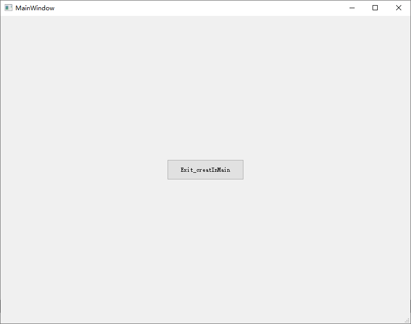
在 MainWindow 中创建 PushButton
同样的在构造函数中增添新建对象的代码：
xxxxxxxxxx51QPushButton btn("Btn_Exit");2btn.setText("Exit_creatInmainwindow");3btn.setGeometry((w.width()-250)/2, (w.height()-40)/2, 250, 40);4/* 父对象为this指针 */5btn.setParent(this);但是这样发现没有按钮出现，经过思考，做了以下更改：
在 mainwindow.h 中添加全局变量：
xxxxxxxxxx21private:2 QPushButton btn;删除原构造函数中的btn变量，并对其配置属性
xxxxxxxxxx61/* 初始化未设置objectName，此处设置 */2btn.setObjectName("Btn_Exit");3btn.setText("Exit_creatInmainwindow");4/* 父对象为this指针 */5btn.setGeometry((this->width()-250)/2, (this->height()-40)/2, 250, 40);6btn.setParent(this);测试：
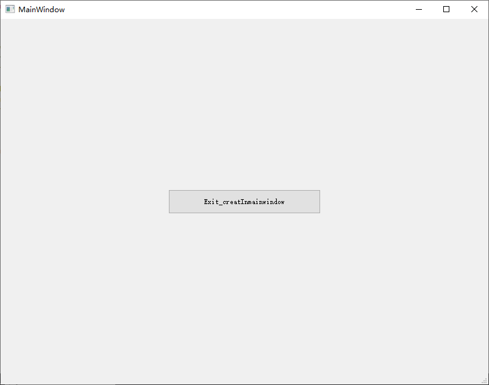
再次思考，又对代码做了如下更改：
删除之前添加的全局变量btn，在构造函数中添加如下代码
xxxxxxxxxx51QPushButton *btn = new QPushButton;2btn->setObjectName("Btn_Exit");3btn->setText("Exit_creatInmainwindow");4btn->setGeometry((this->width()-250)/2, (this->height()-40)/2, 250, 40);5btn->setParent(this);测试结果如上图
其他方式-使按钮发挥作用
在设计界面使用信号槽编辑工具
！适用于设计界面创建的按钮
之前通过右键传到槽来建立连接，这里还有一种方法：
为了直观地显示按钮的作用，再从左侧拖一个TextEdit
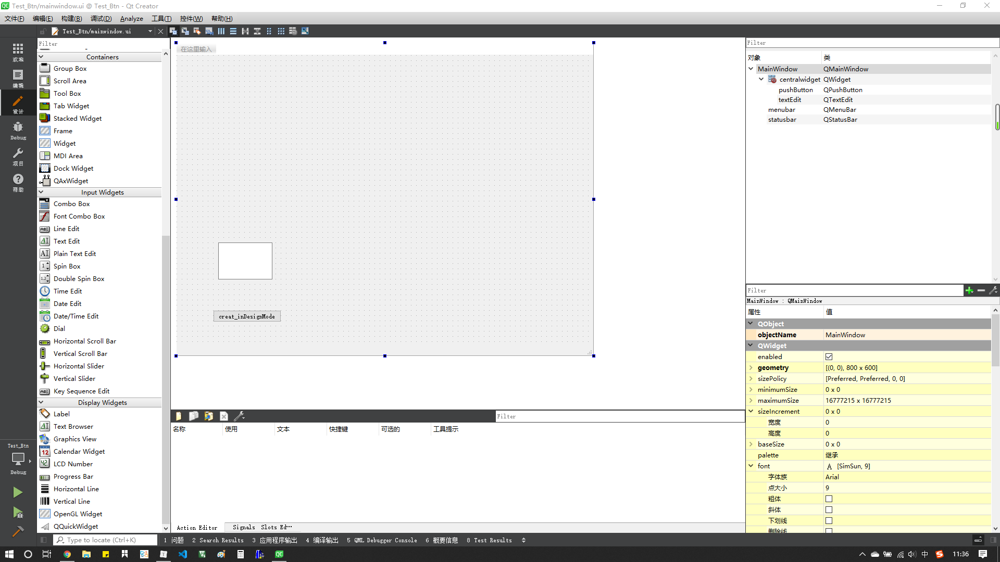
进入设计模式，点击左上
图标
Edit Signals/Slots或直接点击F4进入（F3退出）信号槽编辑模式左键点击按钮，拖出红色信号线到TextEdit
在弹出的熟悉的对话框中选择对应的动作，比如click，然后对应TextEdit操作比如clear
然后运行，在TextEdit中输入字符，点击按钮就会清空
在新建对象后建立连接
在之前新建对象的代码后面增添，这里使用了之前返回的指针btn，关联了当前窗口对象的close方法：
xxxxxxxxxx11btn->connect(btn, SIGNAL(clicked()), this, SLOT(close()));将按键点击与关闭窗口操作关联，测试时点击按钮就会关闭窗口
简单示例-1
按钮点击，显示数字加一
头文件添加全局变量
xxxxxxxxxx21private:2 int num = 0;添加按钮、展示框TextBrowser，对应按钮回调函数中填写相应操作
xxxxxxxxxx41void MainWindow::on_pushButton_clicked()2{3 ui->textBrowser->setText(QString::number(++num));4}测试，按下加一，可在构造函数中初始化显示内容
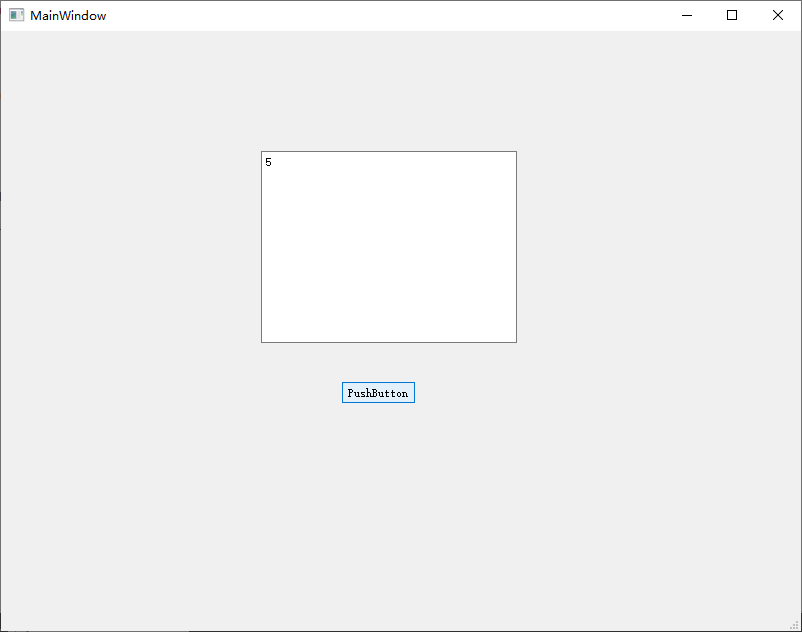
第二个窗口_多窗口-1
如何实现如下功能：
运行弹出一个小对话框，点击按钮后进入主界面，关闭对话框不进入主界面，直接退出。
新的对话框是一个新的文件，要实现这样类似登录的功能，需要在主函数中动手脚，在主窗口没有显示之前，显示一个对话框；
右键左侧工程，点击 Add New ... 或者类似选项，增添新文件
弹出窗口中，模板选择Qt-Qt设计师界面类

按需选择Dialog，这里选择了无按钮对话框

给自己的类起一个名字，起名最好规范，比如NewDialog
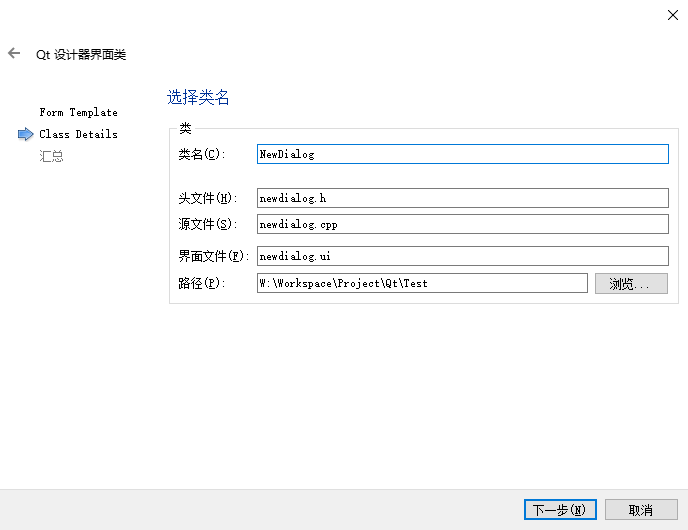
新建完成后，左侧多了新的文件
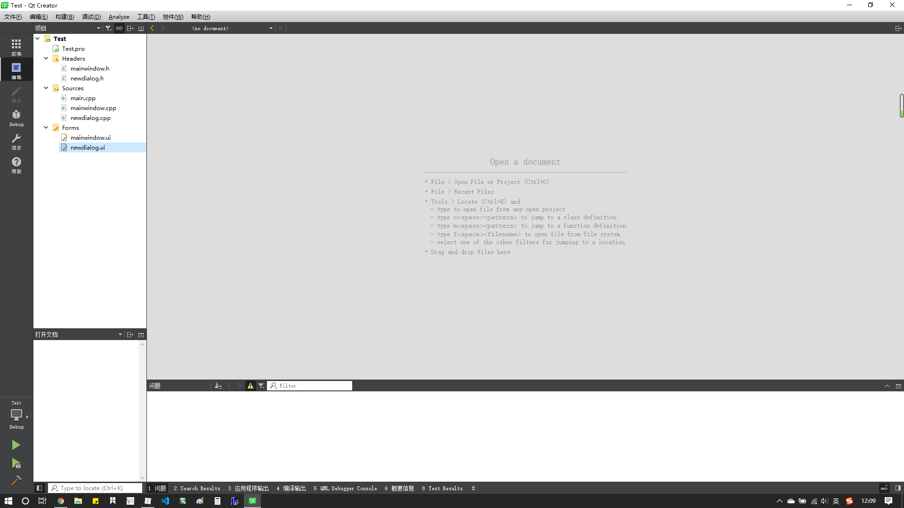
点击新增的ui文件，设计界面

配置信号与槽如下，点击按钮，返回accept

在main.cpp中的 main() 修改如下
xxxxxxxxxx201/* 添加之前新建类的头文件支持 */24int main(int argc, char *argv[])5{6 QApplication a(argc, argv);7 MainWindow w;8 9 /* 新建对话框对象 */10 NewDialog dlg;11 /* 如果对话框返回的结果是Accept */12 if (dlg.exec() == QDialog::Accepted) {13 /* 显示主窗口对象w */14 w.show();15 return a.exec(); 16 } else { 17 /* 否则直接退出 */18 return 0;19 }20}测试结果，应该是运行后出现一个小对话框，点击按钮后，进入主窗口，点击右上角的x则会直接退出，类似于登录界面，只不过这里没有验证机制。
其它方式-建立信号连接
之前我们使用了信号编辑模式建立连接，使得按钮按下返回Accept，其实用代码实现更为简单
首先删除之前建立的信号连接，此时可以编译运行测试一下
右键按钮，新建槽函数，添加代码
xxxxxxxxxx41void NewDialog::on_pushButton_clicked()2{3 accept();4}这样就完成了返回accept的任务，其实原理是一样的，测试后效果应该与之前一样
简单示例-2
利用上述的方法，实现一个简单的登录界面
设计登录界面
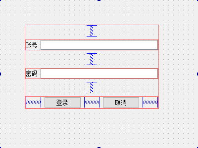
编写两个按钮的槽函数，按钮分别为
Btn_login和Btn_cancel，输入框分别为usr_input和passwd_input
xxxxxxxxxx171/* 添加头文件 */24void NewDialog::on_Btn_login_clicked()5{6 if (ui->usr_input->text() == "gerald0057" && ui->passwd_input->text() == "12344321") {7 /* 符合条件，accept */8 accept();9 } else {10 QMessageBox::warning(this, "Warning", "账号或密码错误！" ,QMessageBox::Yes);11 }12}1314void NewDialog::on_Btn_cancel_clicked()15{16 close();17}编写主界面按钮的槽函数，使其按下退出
xxxxxxxxxx41void MainWindow::on_exit_clicked()2{3 close();4}main函数如之前所述
xxxxxxxxxx161/* 添加自定义类的头文件支持 */24int main(int argc, char *argv[])5{6 QApplication a(argc, argv);7 MainWindow w;8 NewDialog n;910 if (n.exec() == QDialog::Accepted) {11 w.show();12 return a.exec();13 } else {14 return 0;15 }16}此时，可以测试运行成功，但是密码的输入不太美观和安全，在构造函数中配置密码输入对象的属性
xxxxxxxxxx11ui->passwd_input->setEchoMode(QLineEdit::Password);效果如下：
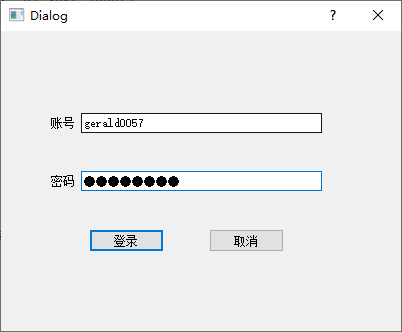
另外，可以设定占位符
xxxxxxxxxx21ui->usr_input->setPlaceholderText("请输入账号：");2ui->passwd_input->setPlaceholderText("请输入密码：");效果如下：
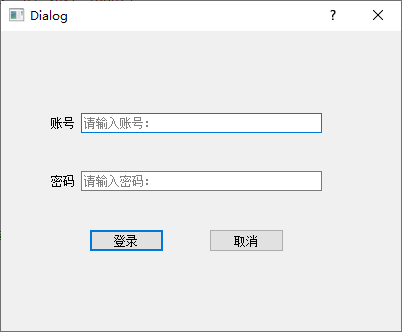
对于用户名的输入，我们有时候希望它能够规范
xxxxxxxxxx91/* 添加正则头文件 */24/* 构造函数中新建re对象 */5QRegExp regx("[0-9a-zA-Z]+$");6/* 构造函数中新建validator对象，关联输入框和正则匹配对象 */7QValidator *valid = new QRegExpValidator(regx, ui->usr_input);8/* 设定有效值过滤 */9ui->usr_input->setValidator(valid);测试时可以发现，账号的输入仅支持代码中规定的数字与大小写字母，其他字符无法输入，或者说输入无效
对于输入错误的情况，我们希望点完 warning 之后可以清空账号和密码输入框，并将焦点放置在账号输入框
xxxxxxxxxx141void NewDialog::on_Btn_login_clicked()2{3 if (ui->usr_input->text() == "gerald0057" && ui->passwd_input->text() == "12344321") {4 accept();5 } else {6 QMessageBox::warning(this, "Waring", "账号或密码错误！" ,QMessageBox::Yes);78 /* 清空 */9 ui->usr_input->clear();10 ui->passwd_input->clear();11 /* 聚焦 */12 ui->usr_input->setFocus();13 }14}第二个窗口_多窗口-2
之前的多窗口是弹出一个小对话框，然后进入主界面，那么如何实现进入主界面，然后点击按钮弹出一个小对话框呢，毕竟这种功能也很具有实际意义
恢复main.cpp
xxxxxxxxxx13135int main(int argc, char *argv[])6{7 QApplication a(argc, argv);8 MainWindow w;910 w.show();11 return a.exec();12}13修改mainwindow.cpp 中的退出按键槽函数，我们使用这个按键打开之间的登录界面，按键就不做修改了
xxxxxxxxxx51void MainWindow::on_exit_clicked()2{3 NewDialog *dlg = new NewDialog();4 dlg->show();5}测试时会出现主界面，点击按钮后跳出dlg指向的对话框对象，登录的功能可以正常使用，
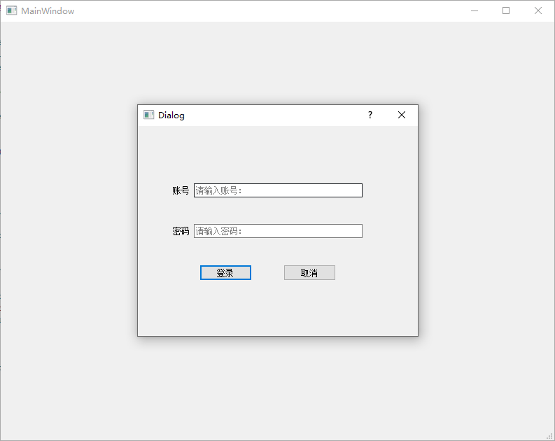
窗口-菜单栏
窗口要实现复杂功能，菜单栏必不可少
首先双击【在这里输入】，比如输入【文件(&F)】，后面的(&F)是与Alt组合的快捷键，可以去掉前后对比

在【文件】的子目录下写入一个【新建(&N)】，这里我无法写入中文，估计支持有问题，但是可以从别的地方复制，在正下方有一个动作列表，双击可修改属性或者增加快捷键
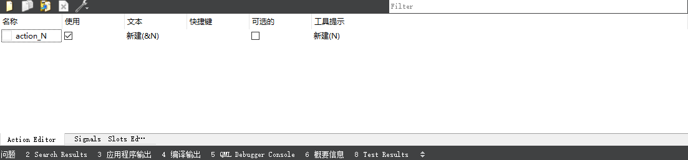
在编辑动作时，图标后面的下拉框可以选择使用文件还是资源，若使用文件，则打开一个本地的文件作为图标，如果使用资源则需要添加资源文件

首先准备一张素材，来自网络，作为新建文件的 icon
图标来源： https://www.easyicon.net
图标作者： easyicon

然后和之前的新建一个对话框窗口一样，右键点击工程名称，Add New... ，选择Qt资源文件
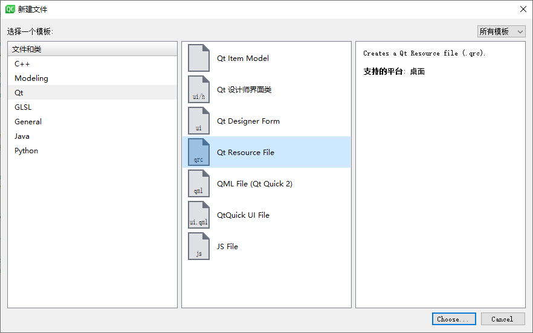
左下添加前缀，最好修改名称，比如放图像的改为 [/Images]，不要填写中文

添加完前缀才能添加文件，文件最好复制到工程下的同一个文件夹内，然后在刚才添加前缀的地方添加进来

这样就算是添加好了，前缀的底下还有一级文件夹[Image]是因为我在工程中新建了这个文件夹放置图片资源，可以看到它的目录在工程Test内部，回到刚才的编辑动作弹窗，点击选择资源

可以看到刚刚添加的图片素材，确认后，可以看到图标被加到了菜单上

其它方式-添加菜单
添加动作到菜单子目录
构造函数修改如下
xxxxxxxxxx161MainWindow::MainWindow(QWidget *parent)2 : QMainWindow(parent)3 , ui(new Ui::MainWindow)4{5 ui->setupUi(this);67 /* 新建动作对象 */8 QAction *openFile = new QAction("打开(&O)", this);9 /* 使用对应目录下的资源设置icon */10 QIcon icon(":/Images/Images/File_Open.png");11 openFile->setIcon(icon);12 /* 设置快捷键 */13 openFile->setShortcut(QKeySequence("Ctrl+O"));14 /* 添加动作到文件菜单对象menu_F的子菜单 */15 ui->menu_F->addAction(openFile);16}可以看到【打开】子菜单拥有快捷键而【新建】子菜单没有，因为之前在编辑动作窗口没有添加其对应的快捷键。
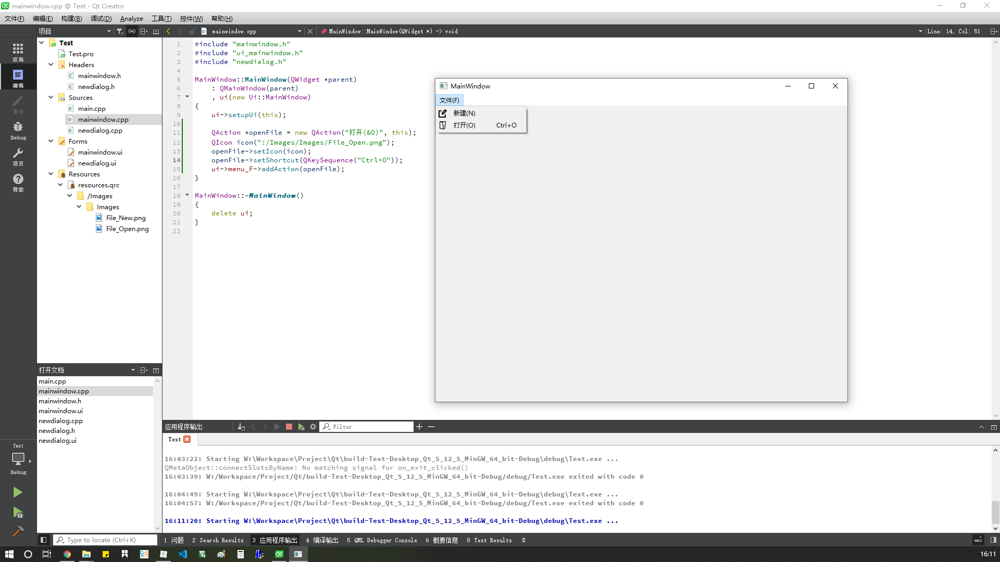
添加动作到菜单
添加到主菜单也一样可以用代码操作，如果不用代码，也可以像之前一样双击【在这里输入】，代码操作如下
xxxxxxxxxx161MainWindow::MainWindow(QWidget *parent)2 : QMainWindow(parent)3 , ui(new Ui::MainWindow)4{5 ui->setupUi(this);67 /* 新建动作对象 */8 QAction *openFile = new QAction("打开(&O)", this);9 /* 使用对应目录下的资源设置icon */10 QIcon icon(":/Images/Images/File_Open.png");11 openFile->setIcon(icon);12 /* 设置快捷键 */13 openFile->setShortcut(QKeySequence("Ctrl+O"));14 /* 添加动作到文件菜单对象menu_F的子菜单 */15 ui->menubar->addAction(openFile);16}仅仅改了addAction的对象，只不过添加了icon后只显示icon了，因此也可以不添加icon
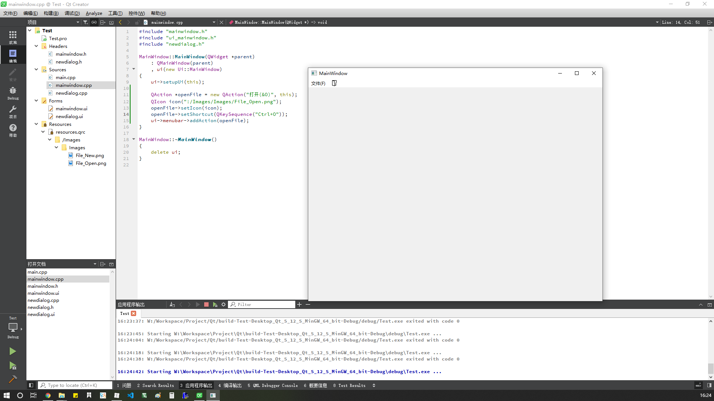
简单示例
使用之前所描述的方法，绘制简单的界面
图标来源： https://www.easyicon.net
图标作者： easyicon

同时添加了任务栏，可以将动作列表中的动作拖到任务栏中用于快速操作
窗口-状态栏-动态提示
创建状态栏

点击动作，在右侧 statusTip 属性中增加提示说明语句，如【新建文件】

实际效果：当指针不论停顿在子菜单的新建还是任务栏的新建（为同一个动作）均在底部状态栏有自定义的提示。

显示临时状态消息：
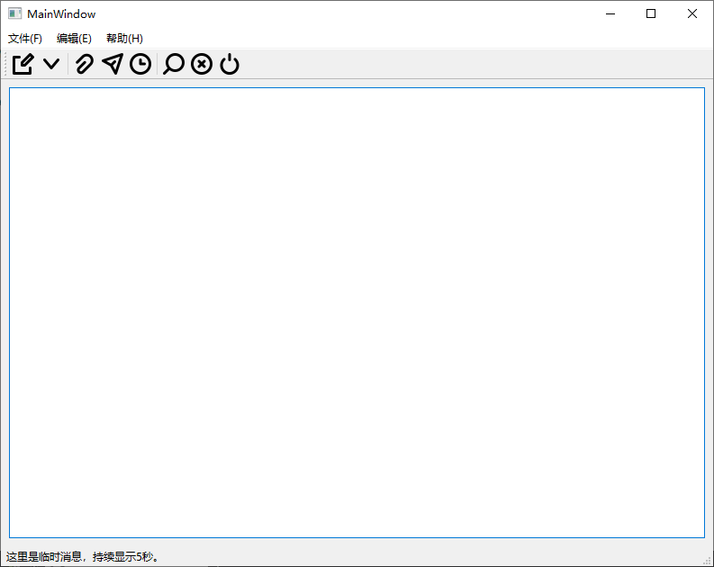
构造函数添加代码：
xxxxxxxxxx11ui->statusBar->showMessage("这里是临时消息，持续显示5秒。", 5000);如果去掉延时，则会一直显示，但会被其他消息覆盖
状态栏-添加控件
x
14MainWindow::MainWindow(QWidget *parent)5 : QMainWindow(parent)6 , ui(new Ui::MainWindow)7{8 ui->setupUi(this);9 10 QLabel *label_status = new QLabel;11 label_status->setMinimumSize(150, 20);12 label_status->setFrameStyle(QFrame::WinPanel | QFrame::Sunken);13 ui->statusBar->addWidget(label_status);14 label_status->setText("label 显示消息");15}
状态栏-提示-2
使用addPermanentWidget()方法将控件添加到状态栏的最右侧，使之不会被覆盖
xxxxxxxxxx1141MainWindow::MainWindow(QWidget *parent)2 : QMainWindow(parent)3 , ui(new Ui::MainWindow)4{5 ui->setupUi(this);67 QLabel *plabel_status = new QLabel;8 plabel_status->setMinimumSize(120, 20);9 plabel_status->setFrameStyle(QFrame::Box);10 plabel_status->setText("<a href=\"https://github.com/gerald0057/Qt_Learning\">github/gerald0057</a>");11 plabel_status->setTextFormat(Qt::RichText);12 plabel_status->setOpenExternalLinks(true);13 ui->statusBar->addPermanentWidget(plabel_status);14}
总结
Qt 的窗口使用常用的方法大致有上述这些
参考资料
- CSDN
- 百度
Qt快速入门系列教程
EasyIcon
Qt教程，Qt5编程入门教程
Qt编程指南 Qt新手教程 Qt Programming Guide